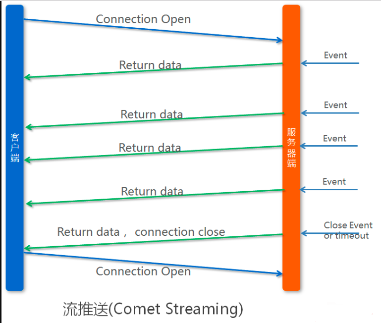

即时通讯简介
即时通讯（Instant Messaging）是一种基于互联网的即时交流消息的业务。
类型：
- 在线push
- 适用：web页面 和 App
- 自己构建IM服务器
- 使用WebSocket
- 采用成熟的框架方案Socket.IO
- 对于App还可自己封装socket
- 使用第三方IM服务商提供的服务
- 离线push
- 适用：App
- 对于iOS，使用APNs
- 对于andorid，使用FCM（国外）或第三方IM服务商提供的服务
提供第三方IM服务的服务商有：
- 网易云信
- 融云
- 环信
- LeanCloud
下面只针对 「在线推送」 的自建方案来展开讲解。
需求场景
服务端需要主动推送消息给客户端，例如
- 用户下了订单，需要在运营管理后台向运营人员推送新订单通知
- 用户A关注了用户B，系统需要向用户B推送提示消息
- 即时聊天
传统的推送实现
HTTP/1.x 不支持服务器主动推送，只能在客户端发起请求后做出回应。 （HTTP/2支持服务器主动推送，但HTTP/2 还未全面实施）
轮询
轮询是在特定的的时间间隔（如每1秒），由客户端对服务器发出HTTP请求，了解服务器有没有新的信息，然后由服务器告知有无新数据或返回最新的数据给客户端。
缺点：
效率低下，浪费资源
必须不停连接，或者连接始终打开，但传输HTTP请求，然而HTTP请求可能包含较长的头部，其中真正有效的数据可能只是很小的一部分，显然这样会浪费很多的带宽等资源。

Comet （基于长连接）
- 长轮询是在打开一条连接以后保持，等待服务器推送来数据再关闭的方式。
iframe流 iframe流方式是在页面中插入一个隐藏的iframe，利用其src属性在服务器和客户端之间创建一条长链接，服务器向iframe传输数据（通常是HTML，内有负责插入信息的javascript），来实时更新页面。
缺点：
依然需要反复发出请求，而且长连接也会消耗服务器资源。
